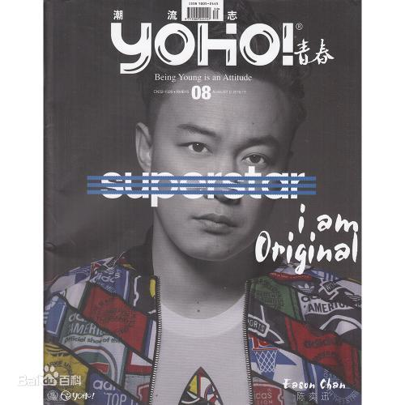
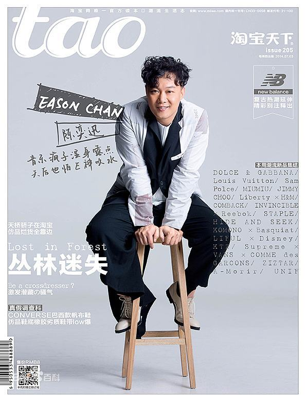

个人简介
陈奕迅（Eason Chan），1974年7月27日出生于中国香港，祖籍广东省东莞市，
华语流行乐男歌手、演员、作曲人，毕业于英国金斯顿大学。
1995年参加第14届新秀歌唱大赛并获得冠军，同年正式出道。
演艺经历
- 华星时期
1995年暑假期间，陈奕迅参加TVB举办的第14届新秀歌唱大赛，并获得冠军；同年，与华星唱片公司签下合约，从而正式进入香港乐坛。
1996年，发行首张个人首张粤语专辑《陈奕迅》
；同年，获得叱咤乐坛流行榜叱咤新力军男歌手银奖 。
1997年，发行个人首张国语专辑《一滴眼泪》
；4月12日，发行粤语专辑《与我常在》，同名主打歌《与我常在》获得第二十届十大中文金曲颁奖典礼最佳创作歌曲奖
；同年，主演个人首部电影《旺角大家姐》。
1998年5月，发行粤语专辑《我的快乐时代》，专辑中的歌曲《天下无双》让陈奕迅在乐坛获得关注，并获得第二十一届十大中文金奖以及十大劲歌金曲奖
；在这张专辑中，陈奕迅还首次参与音乐创作，为专辑作曲了《新曲+精选》以及《反高潮》两首歌曲
；此外，陈奕迅还凭借该专辑获得叱咤乐坛流行榜颁奖典礼“叱咤乐坛至尊唱片大奖”
。 1999年5月，发行粤语专辑《天佑爱人》
，其中主打歌《每一个明天》获得第22届十大中文金曲奖
；10月7日至10日，在香港体育馆举行4场“Big
Live陈奕迅大个唱99”演唱会；12月，发行粤语专辑《幸福》；该专辑成为陈奕迅确立个人音乐风格的作品
；收录于专辑中的歌曲《幸福摩天轮》获得叱咤乐坛流行榜颁奖典礼叱咤乐坛我最喜爱歌曲奖以及十大劲歌金曲奖
。
- 英皇时期
2000年，加入英皇娱乐旗下的Music
Plus唱片公司；9月，发行粤语专辑《打得火热》，主打歌《K歌之王》奠定其在歌坛的地位
2001年，主演爱情片《常在我心》；在片中个性乐观的绝症患者纪小段，并演唱电影的主题曲《活着多好》
同年，获得叱咤乐坛流行榜颁奖典礼叱咤乐坛男歌手金奖 。
2002年4月，发行国语专辑《Special Thanks
to》，包括和声在内的所有演唱均由陈奕迅一人完成；7月，发行粤语专辑《The
Line-up》
2003年4月，发行国语专辑《黑·白·灰》，并首次尝试以“概念”的方式融合音乐
，专辑主打歌《十年》获得中国歌曲排行榜海外十大金曲以及第4届百事音乐风云榜十大金曲奖
- 新艺宝时期
2005年，陈奕迅加入环球唱片旗下的新艺宝唱片公司；3月，举行“新城唱好陈奕迅05出击音乐会”
；6月7日，发行粤语专辑《U87》；该专辑获得IFPI香港唱片销量大奖“十大最高销量广东唱片奖”，并被《时代周刊》评选为“2005年最值得购买的五大亚洲唱片”
；专辑主打歌《浮夸》获得新城劲爆颁奖礼劲爆我最欣赏歌曲奖
，陈奕迅亦凭借该专辑在叱咤乐坛流行榜颁奖典礼上获得叱吒乐坛男歌手金奖、叱咤乐坛我最喜爱的男歌手等六个奖项
；同年，主演喜剧片《神经侠侣》，在片中饰演外表平凡的香港湾仔区警员陈俊杰
。
2006年2月，在香港体育馆举行9场“Get A
Life”演唱会；4月，发行演唱会现场专辑《Get A
Life》；6月，推出粤语专辑《Life
Continues》；专辑中的歌曲《大得太快》由陈奕迅亲自作词、作曲；而专辑主打歌《最佳损友》则获得十大劲歌金曲以及十大中文金曲奖等奖项
；10月21日，参加正东10周年演唱会，并与张学友合唱《热辣辣》、《天下太平》等歌曲
；11月，推出粤语专辑《What'S Going On...?》
；专辑发行后获得中央电视台《综艺快报销售量排行榜》周冠军
；专辑主打歌《富士山下》获得十大中文金曲颁奖礼“全球华人至尊金曲奖”、十大劲歌金曲奖等奖项
。
个人生活
- 家庭生活
陈奕迅的父亲陈裘大祖籍广东东莞，是高级公务员，担任过中国香港房屋署屋宇装备总工程师
；2003年，陈裘大因受贿罪被判刑6年，他于2008年2月提出上诉，并于10月透过“监管下释放计划”获得释放
。陈奕迅的母亲是陆雁鸿，在陆雁鸿移居英国以后，陈奕迅与母亲很少联络 。
- 留学生活
2020年6月18日，据港媒报道，陈奕迅谈及英国留学时期的恐惧。陈奕迅透露了曾被欺负的经历，他说：“我是新人，他们把我塞入胶桶，只有要将整个桶倒在地上，自己才可以慢慢出来。”
- 感情生活
1996年，陈奕迅与中国香港女演员徐濠萦相恋。1997年，二人开始同居生活。2004年10月，陈奕迅、徐濠萦的女儿陈康堤出生
。2006年3月23日，陈奕迅与徐濠萦在香港举行了婚礼 。
演唱会记录
| 举办时间 |
演唱会名称 |
场次 |
| 2020-7-11 |
is so much better with Music Eason Chan Charity Concert |
场 |
| 2017-9 至 2017-12 |
Eason Says C'mon In~Tour |
19 场 |
| 2015-4 至 2016-10 |
Another Eason's LIFE世界巡回演唱会 |
59 场 |
| 2013-7 至 2014-12 |
Eason's LIFE世界巡回演唱会 |
76 场 |
| 2012-8 至 2012-12 |
Feel Free! Feel Music!演唱会 |
6 场 |
| 2010-05 |
陈奕迅2010欧洲演唱会 |
3 场 |
| 2010-04 |
Eason相约北京十年演唱会 |
场 |
| 2010-3 至 2012-12 |
Eason's DUO世界巡回演唱会 |
66 场 |
| 2009-11 至 2010-9 |
90分钟的快活演唱会 |
7 场 |
| 2007-10 至 2009-8 |
Eason's Moving On The Stage世界巡回演唱会 |
44 场 |
| 2007-01 |
陈奕迅 Live in Singapore 2007 |
1 场 |
| 2006-12 |
陈奕迅上海演唱会2006 |
1 场 |
| 2006-2 至 2006-8 |
陈奕迅 Get a Life 演唱会 |
10 场 |
| 2005-07 |
05出击陈奕迅广州演唱会 |
1 场 |
| 2003-2 至 2003-11 |
Third Encounter陈奕迅演唱会 |
12 场 |
| 2001-11 |
The Easy Ride陈奕迅演唱会 |
9 场 |
| 1999-10 |
Big Live陈奕迅大个唱99 |
4 场 |
| 1998-7 至 2011-3 |
陈奕迅音乐会 |
7 场 |
| 1998-03 |
我的快乐时代演唱会 |
3 场 |
杂志写真


个人评价
陈奕迅是香港主流乐坛的代表性人物之一 ，被外界誉为“张学友的接班人”
。他在音乐上经历了一个由商业到不商业、由不自我到自我的过程。他因为流行曲而被更多的人所认知，在成名以后他又用音乐逐渐改变人们对流行曲的理解
。他可以把每一首歌完全吸收消化，然后用直接和诚恳的方式诠释歌曲。他不仅能用发自内心的感情演唱情歌，而且还具有多层面的个性和思维，这也导致他几乎可以胜任所有类型的歌曲
（新浪网、《南都娱乐周刊》、乐评人大地、《南方都市报》、音乐制作人李振权评）。
陈奕迅在成名以后并没有止步不前，而是不断的汲取养分，凭借天赋、灵感以及进取认真的态度赢得歌迷的喜爱
。他是影响香港乐坛风格的歌手
。他在音乐上不拘于形式，并且勇于突破。他发行的每一张唱片都会尝试一些不一样的音乐元素，先后涉猎了电音、爵士、摇滚、独立音乐等各种音乐风格
（新浪网、《时代周刊》、网易评）。
陈奕迅凭借随性不羁、鬼马搞怪的风格在香港乐坛独树一帜。他的嗓音厚实中带着沙哑
，唱腔慵懒且具有独特的个性。他擅长把华丽和经典的唱腔结合，将歇斯底里与俏皮的气质融入心灵。而在着装和造型上，他更是挥洒个性，独特的穿衣风格让他成功吸引众人的目光
；诸多出人意料的造型也让他一次次地创造出潮流
。（中国新闻网、《羊城晚报》、《新快报》、人民网评）。
陈奕迅以“化腐朽为神奇”的唱功见长，对歌曲演绎的细腻与弹性，深厚的香港情怀，将粤语流行曲带向一个新的高度（“华语金曲奖”评）
。